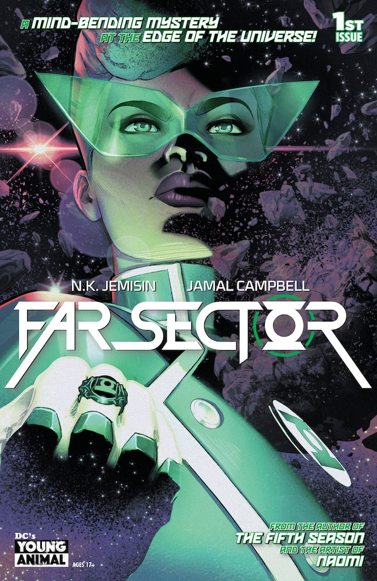

Powers of the Ring · Mainstream comics
Scanning & Analysis
Information helps a Lantern investigate. It does not solve the case for them.

A ring can help gather information. Jo still has a mystery to investigate.
Far Sector #1 (2019), cover by Jamal Campbell. © DC. Publisher issue listing; DC's cover credit. This cover introduces the detective story discussed below; it does not depict a specific scanning feat. Image provenance.
The ring as a field computer
A power ring can supply information as well as create constructs. Its analytical functions let a Lantern examine a situation, seek a target, and communicate findings. DC describes the ring's computer-like role when comparing it with Blue Beetle's scarab.
Keep a reading, a stored record, and a deduction separate. Detecting a signal is not the same as knowing who caused it; finding a life-form is not proof of its intentions. This guide does not treat the ring as an infallible lie detector or a recording of every event that ever happened.
What to look for in the comics
- Tracking a specific target: in Green Lantern Corps (2006) #24, the Corps' search for Sinestro Corps rings brings them into Mongul's territory. The search serves a mission; it does not remove the dangers waiting at the destination.
- Doing detective work: Jo Mullein's Far Sector begins with a murder in an unfamiliar alien society. N.K. Jemisin's DC interview explains the need to work with local investigators and political leaders. Jo's ring does not replace understanding the people involved.
- Consulting institutional knowledge: Supergirl (2016) #23 makes the Corps' database on Mogo part of Kara's investigation. A database is a maintained source of information, not omniscience.
Limits worth keeping in view
The useful question is what the particular ring can identify in that story. Different rings, missing records, unfamiliar phenomena, and the Lantern's own interpretation can matter. Avoid turning one impressive scan into a claim that every Lantern can always identify any substance, read any mind, or reconstruct the past.
Read next: Ring Quest for a Corps search mission, or Far Sector #1–12 for a complete detective story.
Sources: linked DC issue listings and creator interview. Reviewed November 4, 2026. The examples describe investigations; they do not establish universal technical specifications for every ring.
Artwork credits (1 image)
Credits refer to the illustrations shown here. Open a record for sources, adaptations and unresolved details. Some artwork and source pages contain story spoilers.
- Scanning Far Sector 1 — Far Sector #1 (2019), main cover. Jamal Campbell (cover artist (publisher credit)).